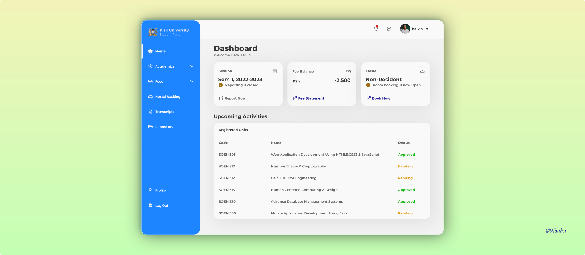
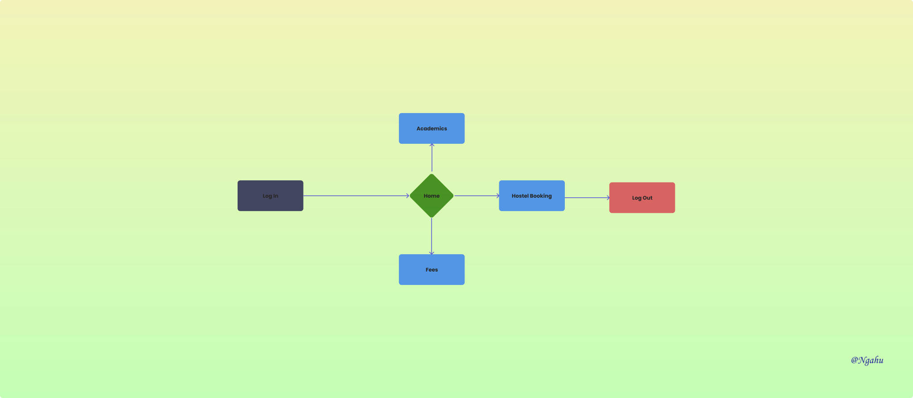

Web Application
Interface & Interaction Designer
Figma, Figjam
July 2020

Kisii University student portal was developed by a company known as ABNO Softwares International. In a span of five years, it has recieved only one interface design update. From a far observation, it can be assumed that the stakeholders hold to a phrase, "If it is working; do not touch it".
Before the 2020 Covid19 Pandemic, Kisii University had not fully utilized the capability of its online and portal platform. The Pandemic forced fully adoption and reliance of the online platform including student portal. This approach was constantly rejected by students and staffs with a fear of uncertainty.
The overal User experience of the platform is considered poor. Similarly, there were other problems such as constant downtime rendering portal services unavailable or inaccessible.
Being one of the Portal users, I outlined my goals and compaired to other students' goals, and determined their intersection.

Report for session on time ‐ within two weeks after session reporting is open.
Book for acomodation in the institution's hostels. Booking is done prior to official reopenning of the institution after a closure at the end of every semester.
Register for Units, special examination, Apply for retakes and other failed units; together with viewing for examination results and transcripts.
View outstanding fee balances. Accessing fee statement and Fee structure for each academic year.


This being among my first introductory design project practice with an aim to solve an existing problem; I believe there is still some misses and catches in it. I take delight in it as it constantly reminds me where I first begun and serves as a motivation to keeping an eye on every detail, and always be a user champion.